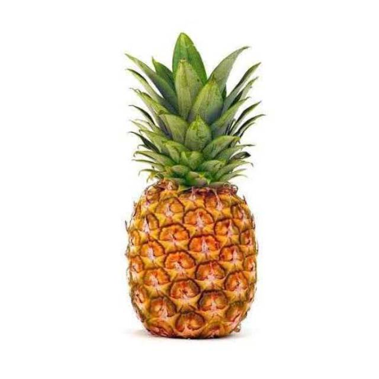

tentang buah Nanas!
Nanas

Nanas(Ananas comosus) adalah tumbuhan tropis dengan buah yang dapat dimakan dan tumbuhan yang paling penting secara ekonomi dalam famili Bromeliaceae.Nanas adalah tumbuhan asli Amerika Selatan, dan telah dibudidayakan disana selama berabad-abad. Pengenalan nanas ke Eropa pada abad ke-17
menjadikannya ikon budaya kemewahan yang signifikan. Sejak tahun 1820-an, nanas telah ditanam secara komersial di rumah kaca dan banyak perkebunan tropis. Selain itu, nanas merupakan buah tropis terpenting ketiga dalam produksi dunia. Pada abad ke-20, Hawaii adalah penghasil nanas yang dominan, terutama untuk AS; namun, pada tahun 2016, Kosta Rika, Brasil, dan Filipina menyumbang hampir sepertiga dari produksi nanas dunia.
Nanas tumbuh sebagai semak kecil; Bunga individu dari tanaman yang tidak diserbuki menyatu untuk membentuk buah yang banyak. Tanaman biasanya diperbanyak dari offset yang dihasilkan di bagian atas buah,atau dari tunas samping, dan biasanya matang dalam waktu satu tahun.
juga digunakan banyak jenis makanan pesta.
- Meningkatkan Sistem Kekebalan Tubuh
- Menurunkan Tekanan Darah
- Membantu Kesehatan Mental
- Membantu Mengurangi Risiko Kanker
- Mengobati Batuk dan Pilek
- Memperkuat Tulang
daftar harga
| jenis Nanas | Harga | |
|---|---|---|
| per kilo | per biji | |
| Nanas Queen | 80.000 | 8.000 |
| Nanas Cayenne | 45.000 | 9.000 |
| Nanas Smooth Cayenne | 56.000 | 8.000 |
| Nanas Honi | 100.000 | 10.000 |